创建一个默认角色。素材取自epic商城Wizard for Battle polyart
创建角色类蓝图，命名为“BP-角色模板”
选择骨骼网格体，调整方向位置。
一个角色在组件中有多个摄像机时，当创建该角色时，这些摄像机都是激活状态。
所以为了进入游戏（控制角色）的时候是某个确定的摄像机是激活，其他的都是不激活，需要在EventBegin时设置。
设定：Camera1是上帝视角，Camera2是后背视角，Camera3是备用摄像机，后期可以用于第一人称。
默认相机是上帝视角相机，也就是Camera1
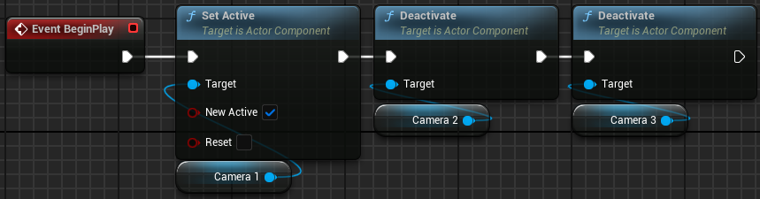SetActive节点的NewActive参数应当手动设置。应该可以用SetActive节点替换Deactivate节点。
接下来实现相机切换
因为我们有三个相机，所以要关注三个相机的IsActive情况
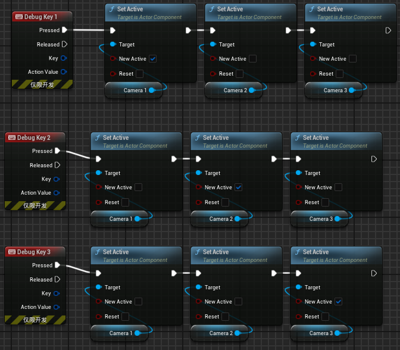实现了不同按键不同视角之后，我们要实现一个按键周期性的交替摄像机
创建Actor组件，命名为“多摄像机组件”，创建变量命名为“摄像机数量”、“当前相机索引”，可编辑实例、生成时公开，默认值为3（注意，索引的默认值为0，能表示3个摄像机）
在角色模板中创建多摄像机组件。通过多摄像机组件的“相机索引%摄像机数量”
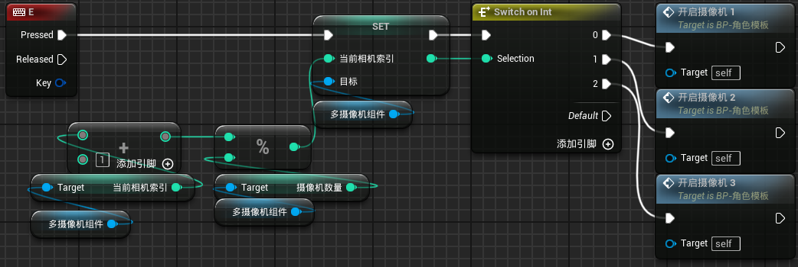这样就完成了摄像机的循环切换
可以用循环计数器对部分节点进行替换
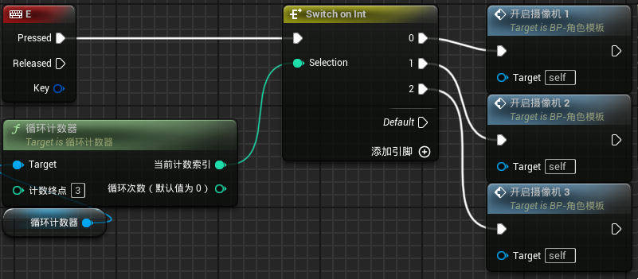在事件图表中创建弹簧臂组件节点，得到该组件的TargetArmLength（目标比长度）并进行设置。
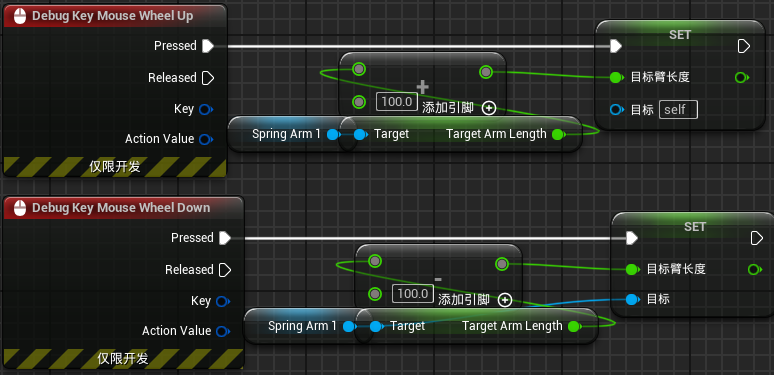在内容浏览器中创建文件夹“输入系统”，在子文件夹中创建文件夹“上帝视角wasd输入系统”、“上帝视角moba输入系统”、“TPS视角输入系统”
三个文件夹的说明：
创建3种输入映射情境，分别命名为“上帝视角wasd输入系统、RTS输入系统、TPS输入系统”。
进入“默认玩家控制器”（自己创建的），编辑启用的输入映射。在事件图表中Get a reference to self，然后从self中引出Get EnhancedInputLocalPlayerSubsystem节点，以从玩家控制器获取增强输入本地玩家子系统。
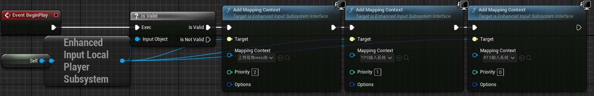设置输入映射验证
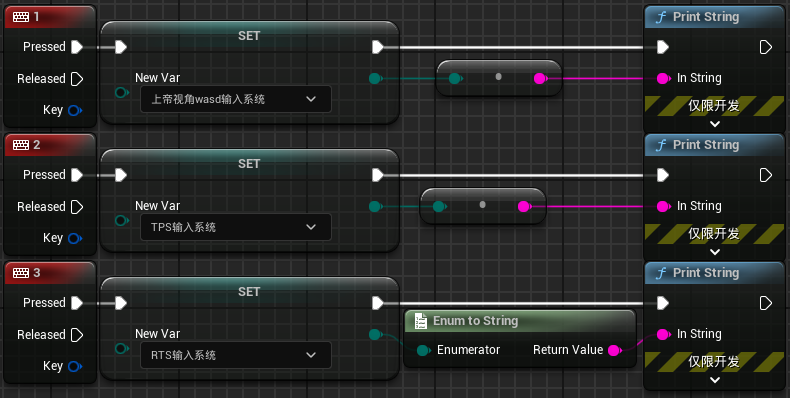关注两种toString的区别：上面的是转为int，下面的是按照enum内容转string。
依次完成上述输入系统
先简单实现上帝视角wasd输入系统的输入操作和TPS视角的输入操作。
先简单实现上帝视角wasd输入系统的输入操作。
在输入映射上下文中对IA-移动输入进行设置
进入BP-角色模板，创建enhanced action events的IA-移动节点，通过这个节点的输出值进行AddMovementInput
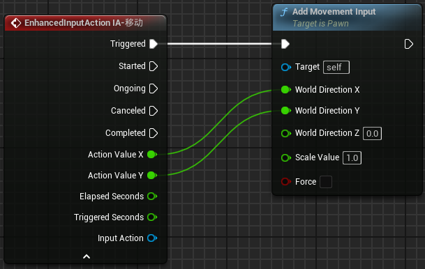勾选“将旋转朝向运动”。注意，此时摄像机的角度不能垂直于地面
去主角细节中把使用控制器旋转yaw取消勾选。因为摄像机跟着转，所以去弹簧臂细节里把继承yaw轴关了。
这样就实现了上帝视角wasd输入系统的输入操作。
接下来实现TPS视角的输入操作。
和上帝wasd一样，只是TPS所使用的弹簧臂不取消勾选继承yaw轴，以在测试是区分。（后期真正实现TPS操作时再取消勾选）为了区分，也可以在TPS输入系统
然后重写开启摄像机n自定义事件。原来的开启摄像机事件是很简单的设置摄像机SetActive
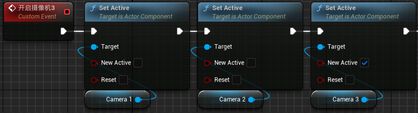重写也只是在后面加上添加映射上下文和移除映射上下文的东西。
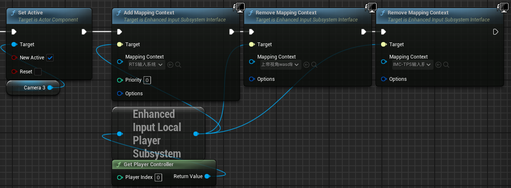对三种开启摄像机的Add&Remove mapping context进行对应设置即可。
（目前设置描述：摄像机1是wasd输入，摄像机2是TPS输入，摄像机3是RTS输入。）
修改自定义事件名称：开启摄像机n改名为启用游玩模式n
删除设置弹簧臂长度内容。后期将它放置在RTS游玩模式下。
修改摄像机弹簧臂的角度
（根据目前设置描述改角度：摄像机1是wasd输入，摄像机2是TPS输入，摄像机3是RTS输入。）
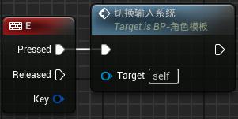 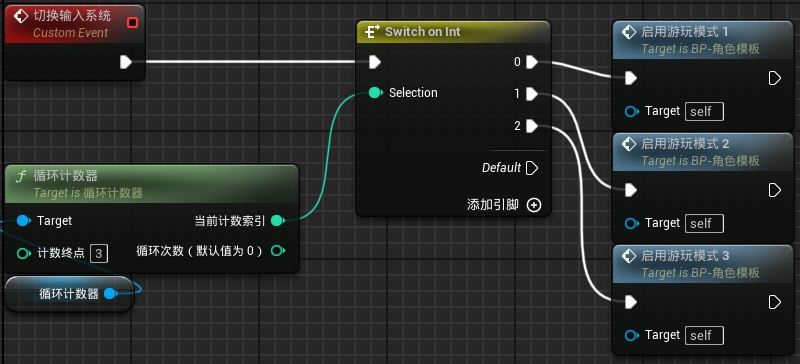回顾：我们需要三个输入系统来实现三种游玩模式，每种游玩模式需要控制使用的摄像机和输入系统。
摄像机是Actor的组件，所以不能通过创建输入系统组件ActorComponent来改变游玩模式。如果ActorComponent也可以创建摄像机，那么就可以了。
换言之，不能仅通过多摄像机组件来实现相机的切换。但是，多摄像机组件可以实现游玩模式的切换。
创建ActorComponent，命名为AC-多输入模式。我们给这个组件定义三个函数，来分别实现三种控制模式(删除多摄像机组件)
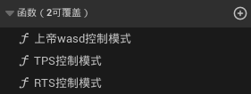函数的实现方式和前面的切换控制方式一样。
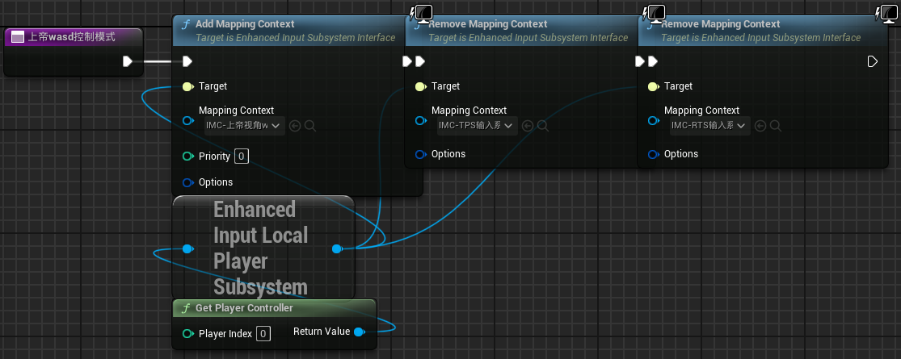然后在Actor里实现函数调用
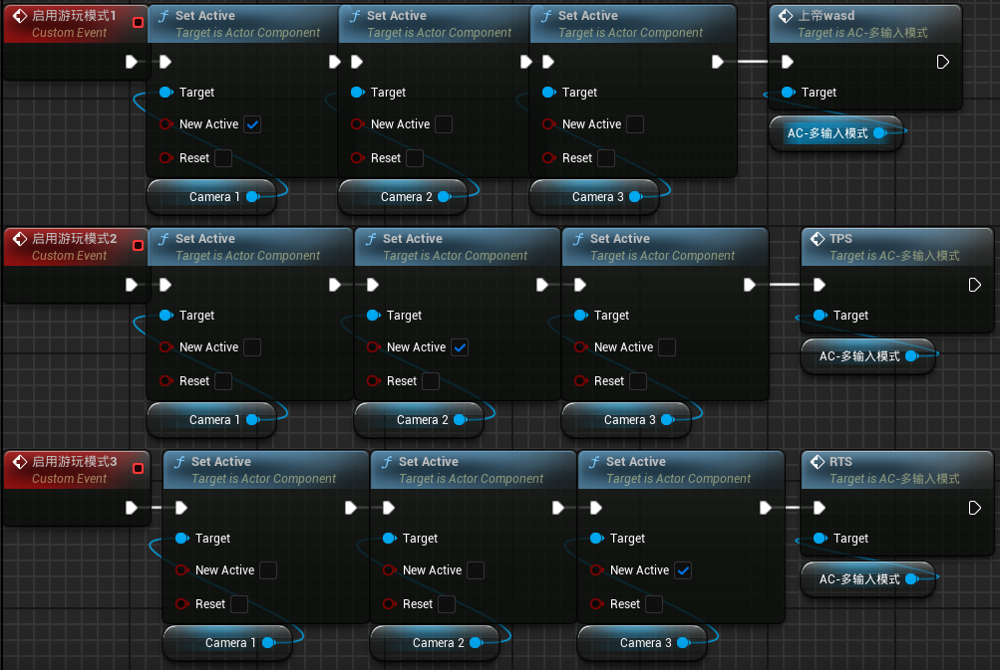我原本的构想是，通过enum赋值为三种输入系统的名字，Set现在enum的实际值来改变现在的游玩模式。玩家可以通过某种方式指定要使用的游玩模式，而不是像前面一样循环。
上述构想的困难：SetEnum的形式参数是enum型变量，不能通过int、text值赋值。目前不知道怎么得到enum型变量的最大int值。
我们希望TPS下可以倒着走，同时攻击前方单位
但是目前的效果是倒着走时攻击就是攻击角色前方（视角后方）的方向
所以我们简单实现一下，通过一个按键让角色朝向视角前方
在角色模板中
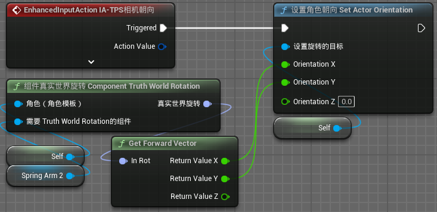